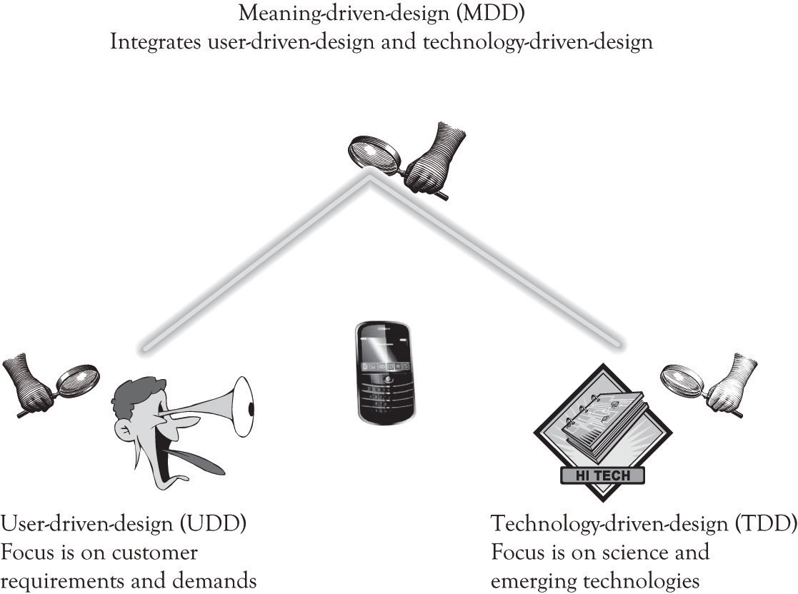

There are three fundamental approaches to design (Figure 7.2 "Fundamental Design Approaches"). The user-driven design (UDD)Design approach focused on researching consumer wants and needs. school is focused on researching consumer wants and needs. The technology-driven design (TDD)Design approach focused applying new and emerging technologies to develop products and services. school is not a school per se, but rather an approach that is focused on applying new and emerging technologies to develop products and services. The meaning-driven design (MDD)Design approach focused on the emotional and psychological relationships that people have with things, objects, and products and attempts to design products that satisfy these meanings. school focuses on the emotional and psychological relationships that people have with things, objects, and products and attempts to design products that satisfy these meanings. Most products can be designed using all three approaches, for example, software, custom houses, furnishings, electronics, clothes, personal care, appliances, and transportation. Some products such as CPUs’ semiconductors and nanotechnology and health equipment are primarily technology driven.
Figure 7.2 Fundamental Design Approaches
MDD also involves UDD, but it is not the motivation behind the entire process. In MDD, the company executives and research and development (R&D) personnel design the next-generation product and then present it to consumers. They still obtain a reaction from potential consumers, but it is not the sole driving force behind the process. The MDD approach also incorporates technology-push innovation, where innovative emerging technologies are pushed to the market. In essence, MDD uses elements of both UDD and TDD to deliver innovative products. The unique part of MDD is the search for meaning. There is a search for meaning in the way that people relate to objects. This is often accomplished by collaborating with other organizations and with experts in the product domain on how the product should be designed. The design of the product is not solely derived from customer pull as is the case of UDD, but is also driven by the innovator and new and emerging technologies. In MDD, the innovator synthesizes information from a variety of sources and then uses this knowledge to design innovative products.Software developers often use a technique referred to as user-centered design or participative design that has elements of UDD and MDD. In user-centered design, there is an iterative process of building the application and having the user continuously validate software solution.
The idea behind the MDD School of innovation is to look for meaning in everyday products and to try to determine how they can be changed in a radical way to support the emotional and psychological needs of consumers. The MDD approach to developing a Blue Ocean market involves understanding how customers relate to products and then developing new products that get at the core of what meaning customers attach to products.As noted in an earlier chapter. A Blue Ocean market is a market that is not in existence. A Blue Ocean product is a new product that is radically differentiated from existing products that are being offered.
Many individuals in the MDD school believe that the user-centered design is a hindrance to developing radical innovations.Cf. Verganti (2009). The focus of the MDDapproach is to find the meaning in the way people relate to objects in their everyday life. The MDD school of innovation not only contemplates beauty and form, but also examines the emotional and psychological relationships that people have with things, objects, and products. Proponents of MDD believe that developing innovative ideas that transcend existing product concepts requires more than just attending to product differentiation. Since the MDD school of innovation uses a push strategy. Product ideas are conceived as a vision and offered to consumers as a proposal. As noted by Verganti: “These proposals are not dreams without a foundation. These proposals eventually emerge as the products users were actually looking for. They end-up being what people were waiting for—and thus are great marketing successes” (p. 116).
We alluded to the fundamental meaning of product in the earlier discussion of the basic functions of products. There are many different types of meanings that can be attached to products, some of them are tangible and some of them are complex and elusive. Key areas of meaning include the following: provide physical and emotional sustenance; facilitate control over the environment; provide entertainment; provide feelings of status, superiority, and elitism; provide a sense of stewardship; provide a sense of altruism; provide feelings of adventure; provide security and comfort; facilitate the completion of some work or home task; provide familial support; support learning and adaptation; help us to change location; provide opportunity for communication and networking; provide for respect and recognition; and, of course, be a source of satisfaction and happiness.
Traditional user-centered design approaches are not focused on understanding the meaning of the relationship that people have with objects. The Wii is not a game machine, it is the campfire surrounded by family and friends. Embedding diamonds in wireless phones contributes little to the calling function. But in some people’s minds, diamonds are a symbol of affluence and sophistication and are used to convey that image. The iPhone is not just a phone and the iTouch is not just an MP3 player, they are status symbols that also provide comfort and social networking. A Cirque du Soleil performance is not just a circus or just entertainment, it is a risky adventure in an ethereal world never seen before. The iPad is not a replacement for a netbook or a laptop, it is the adventurer’s guide to the galaxy of knowledge and entertainment. It is the present day Hitch Hikers Guide to the Galaxy.
Attaching meaning to objects is of course somewhat subjective and strongly influenced by the researcher’s background and by social mores. There are numerous types of meaning that can be examined and they are often interdependent.
Designing products that draw on meaning requires creativity and hard work. Creativity can be cultivated and is within the grasp of most people as discussed in Chapter 6 "Facilitating Creativity and Innovation". The hard work is the never-ending process of determining the proper ingredients that go into the secret sauce to keep people from becoming bored or even worse, ignoring your product.
A key part of the MDD process involves partnering with interpreters. This partnering involves both learning-about and learning-by-doing. The interpreters are the organizations and individuals who are working on products that are similar to the products that you are examining. They can be suppliers and component manufactures, consultants, consumers, competitors, universities, research firms and think tanks, trade association and publications, research conferences, and of course one of the most important interpreters, the search engine.
There are other approaches to design that focus on marketing, project management, product management, portfolio management, product engineering, creativity, and controlling the process. Later chapters will discuss the role of project management, new product development and portfolio management in providing structure to the innovation process.
Many companies use hybrid approaches that draw on UDD, TDD, and MDD. Our focus in this chapter is primarily on MDD. But we also rely on user-centered design for refining products and making them usable. Even Apple, who we believe is the wunderkind of MDD in the USA, listens to their customers. For example, they redesigned Apple TV to become an inexpensive video-streaming device and put buttons on the smallest shuffle because consumers did not like having all the music control buttons on the ear bud cord.Lyons (2010b, September 1). UDD is also very important for software development, whether it be in the context of game development, applications development, or social networking applications. A customer-centric agile development process is essential for delivering products that will be used. Ergonomics, ergonomics laboratories, and usability research are the foundation for delivering high-quality software products to the consumers.
There is one more design strategy that can be linked to many product failures. It is a purely functional design strategy that does not incorporate user needs or meaning at all. There is little if any UDD or MDD. This situation occurs where someone thinks that there is a need or demand for a product or service, but the end-users were not listened to or were ignored completely. This often occurs when there is no need or demand for a product or service, but someone thought that it would be a good idea to develop it anyway. I was involved with such a product when I worked as a programmer. Here is the story.